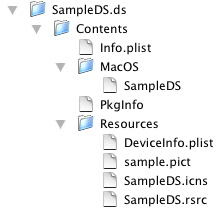
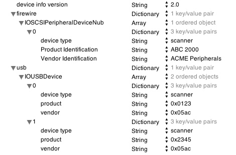
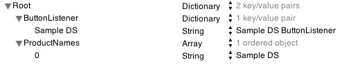
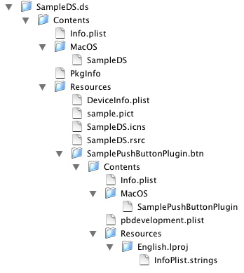

|
TWAIN for Mac OS XTWAIN defines a standard software protocol and application programming interface (API) for communication between software applications and image acquisition devices (the source of the data). This technote assumes the reader is already familiar with the TWAIN specification. To get the full TWAIN specification, and to learn more about TWAIN, visit the TWAIN Working Group website. The Mac OS X TWAIN implementation includes a TWAIN Data Source Manager (DSM). This software manages the interactions between the application and the TWAIN Data Source. This DSM is implemented as a Mach-O framework, and is located in: /System/Library/Frameworks/TWAIN.framework All Mach-O based Cocoa and Carbon client applications should link to this TWAIN.framework. CFM-based applications require a CFM glue library that is located in: /System/Library/CFMSupport/TWAIN Source Manager.Shlb TWAIN Data Sources can be CFM or Mach-O based. They must be implemented as a bundle (see the section TWAIN DS packaging below). Developers should place their TWAIN Data Sources in: /Library/Image Capture/TWAIN Data Sources/ though Image Capture will also search: /System/Library/Image Capture/TWAIN Data Sources/ Also, on Mac OS X 10.2 and later, Apple Image Capture uses a TWAIN software "bridge" TWAINBridge.app (found in: /System/Library/Image Capture/Devices/TWAINBridge.app) to access TWAIN Data Sources. This TWAINBridge software allows all Image Capture clients to access TWAIN devices transparently as if they were being handled by Image Capture native scanner drivers. TWAIN DS packagingIn order to be recognized by the TWAIN DSM, TWAIN Data Sources have to be laid-out as a new-style bundle as shown below: Figure 1: DS bundle layout.  For more information about bundles see Mac OS X Bundles. The bundle must contain a Contents directory and, inside it, an Info.plist file. It must also contain a Resources directory and, inside it, a DeviceInfo.plist file. For more information about the role of these property list files, see the section TWAIN DS Property List Files below. Finally, the folder extension for the bundle must be .ds. TWAIN DS UI-less modeA TWAIN DS for Mac OS X has to support the otherwise optional mode of operation in which the user interface (UI) is suppressed (check the TWAIN specification for the more information). This allows applications like Apple Image Capture to use the TWAIN DS via the Image Capture TWAINBridge software. TWAIN DS Property List FilesAs with all other new-style bundles, a TWAIN DS carries an information property list file Info.plist in its Contents folder. The Info.plist has standard entries for keys like In order to use a TWAIN DS, Image Capture needs a way to associate the TWAIN DS with a connected device. Adding device related information to the Info.plist for the Data Source allows this. For FireWire devices, the Info.plist contains the product and vendor identification and the device type which should be set to "scanner". For USB devices, the Info.plist contains the product and vendor ID values and the device type which should also be set to "scanner". The product and vendor values are taken from the IORegistry. You can connect your device and examine these IORegistry values using the IORegistryExplorer utility (this utility is part of the Apple Mac OS X Developer Tools, see Apple Mac OS X Developer Tools ) or from the Terminal using the ioreg tool (type "ioreg -lw 0 dump" for example). More specifically, for USB devices, the properties can be found in the node representing the IOUSBDevice and are named "idVendor" and "idProduct". For FireWire devices, the properties are named "Vendor Identification" and "Product Identification" and can be found in the IOSCSIPeripheralDeviceNub node. Here's Terminal output from the ioreg tool for a USB device showing these properties: Listing 1: ioreg tool output for a USB device. +-o IOUSBDevice@1100000 <class IOUSBDevice>
| {
| "bDeviceSubClass" = 0
| "bcdDevice" = 256
| "USB Serial Number" = "AP94M1703PPE"
| "IOUserClientClass" = "IOUSBDeviceUserClient"
| "USB Vendor Name" = "ACME Peripherals"
| "IOGeneralInterest" = ("_IOServiceInterestNotifier is not serial...
| "idVendor" = 1452
| "Device Speed" = 1
| "sessionID" = 167599321426758
| "locationID" = 17825792
| "iManufacturer" = 1
| "iProduct" = 2
| "bDeviceProtocol" = 0
| "bDeviceClass" = 0
| "idProduct" = 291
| "Bus Power Available" = 250
| "bMaxPacketSize0" = 8
| "USB Address" = 2
| "PortNum" = 1
| "IOCFPlugInTypes" = {"9dc7b780-9ec0-11d4-a54f-000a27052861"="IOUSB...
| "bNumConfigurations" = 1
| "iSerialNumber" = 3
| }
Here's Terminal output from the ioreg tool for a FireWire device showing these properties: Listing 2: ioreg tool output for a FireWire device. +-o IOSCSIPeripheralDeviceNub <class IOSCSIPeripheralDeviceNub<
| {
| "Product Identification" = "ABC 2000"
| "Product Revision Level" = "2.03"
| "IOProviderClass" = "IOSCSIProtocolServices"
| "CFBundleIdentifier" = "com.apple.iokit.IOSCSIArchitectureModelFam...
| "Vendor Identification" = "ACME Peripherals"
| "Protocol Characteristics" = {"Physical Interconnect Location"="Ex...
| "IOMatchCategory" = "SCSITaskUserClientIniter"
| "IOUserClientClass" = "SCSITaskUserClient"
| "IOClass" = "IOSCSIPeripheralDeviceNub"
| "IOProbeScore" = 0
| "Peripheral Device Type" = 3
| "IOCFPlugInTypes" = {"7D66678E-08A2-11D5-A1B8-0030657D052A"="IOSCS...
| "SCSITaskUserClient GUID" = <02e41c00000023363114ca1d>
| "SCSITaskDeviceCategory" = "SCSITaskUserClientDevice"
| }
|
Here's sample output from the Property List Editor utility (also from the Mac OS X Developer Tools) for a typical scanner device property list file with the appropriate product and vendor values added: Figure 2: A typical scanner device property list file.  The DeviceInfo.plist property list file (the second property list file in the bundle's Resource directory) for the device contains information that allows the Image Capture TWAINBridge to use the TWAIN DS. This file must contain an entry "ProductNames" that allows a mapping of the Data Source bundle to whatever the Data Source returns as the TWAIN identifier. Here's how it looks: Figure 3: A DeviceInfo.plist property list file.  The DeviceInfo.plist may also contain a reference to a button listener plug-in code module (see TWAIN DS Button Listener below) in the "ButtonListener" entry. This plug-in module gets loaded by the TWAINBridge and does the "button listening" for the connected device. Once a device button is pressed, a user-selected application gets launched. TWAIN DS Button ListenerAs mentioned in the previous section TWAIN DS Property List Files, a TWAIN DS may specify a reference to a button listener plug-in code module in its DeviceInfo.plist property list file. This code module resides in the Resources folder of the DS, and is loaded by the TWAINBridge to query for button presses for the device. Sample code for a button listener plug-in ("SampleButtonPlugin") can be found on the Apple Developer website here: SampleButtonPlugin sample code. This plug-in code module is packaged as a bundle. The bundle file must end with .btn. Here's how the layout looks: Figure 4: Button listener bundle layout.  The plug-in code module must export the following symbols: Listing 3: Module Entry-Points. _TWAINButtonPluginStart _TWAINButtonPluginStop The Prototypes for these entry points are as follows: Listing 4: Module Entry-Point Prototypes. OSErr TWAINButtonPluginStart(UInt32* locationID,
UInt64* guid,
io_string_t twainPath,
ButtonPressedCallback callback);
OSErr TWAINButtonPluginStop(UInt32* locationID,
UInt64* guid,
io_string_t twainPath);
For USB devices, the For FireWire devices, the The When the Here's the prototype for the button-press callback procedure: Listing 5: Button-press Callback Prototype. typedef CALLBACK_API_C( void, ButtonPressedCallback )(OSType message,
UInt32* locationID,
UInt64* guid);
TWAIN DS & Carbon EventsPrevious TWAIN implementations for Mac OS 9 were implemented around the This type of event handling is not suitable for the Mac OS X environment, where Carbon or Cocoa applications do not even have a user exposed event loop. For old-style Passing events from the Client Application to the DS - The Old WayPages 3-28 through 3-31 of the TWAIN Specification Version 1.9 describe how to modify the application's event loop to pass events from the client application to the DS so the DS can properly respond to them, and how to properly check for messages sent from the DS. Page 3-30 illustrates typical modifications necessary for a Macintosh application to support TWAIN-connected sources by polling for events with an old-style For sending events to the DS, an application normally uses While this technique for sending events to the DS is still supported by the Mac OS X TWAIN DSM, it is no longer the preferred technique. Passing events from the Client Application to the DS - The New WayInstead of getting called by the application with a For more detailed information about Carbon Events, see the Carbon Event Manager Reference. This means instead of getting called with a Listing 6: Setting-Up Carbon Event Handlers. InstallStandardEventHandler(GetWindowEventTarget(GetDialogWindow(gDialog)));
InstallWindowEventHandler(GetDialogWindow(gDialog),
NewEventHandlerUPP((EventHandlerProcPtr) windowEventHandler),
GetEventTypeCount(windowEvents), windowEvents,
0,
NULL);
The event handler will also get called for all UI interactions. Here's a more detailed code example, taken from our Data Source sample code (which you can get from the Apple Developer website here: Data Source sample code) showing how to set up Carbon Event handlers: Listing 7: Carbon Event Handlers Setup. // ------------------------------------------------------------------
// DisplayUserInterface
// ------------------------------------------------------------------
//
void DisplayUserInterface()
{
SInt16 savedResRefNum;
SInt16 resRefNum = 0;
OSStatus status = noErr;
CFBundleRef selfBundleRef;
ControlRef pictureControlRef;
EventTypeSpec windowEvents[] = {{kEventClassWindow,kEventWindowDrawContent},
{ kEventClassWindow, kEventWindowUpdate },
{ kEventClassWindow, kEventWindowClose },
{ kEventClassWindow, kEventWindowClickDragRgn },
{ kEventClassMouse, kEventMouseDown },
{ kEventClassMouse, kEventMouseMoved } };
selfBundleRef =
CFBundleGetBundleWithIdentifier(CFSTR("com.apple.sampleds"));
if (selfBundleRef)
resRefNum = CFBundleOpenBundleResourceMap ( selfBundleRef );
savedResRefNum = CurResFile();
UseResFile ( resRefNum );
gDialog = GetNewDialog(128, nil, (WindowRef)-1);
UseResFile ( savedResRefNum );
ChangeWindowAttributes(GetDialogWindow(gDialog),
kWindowStandardHandlerAttribute |
kWindowCloseBoxAttribute,
kWindowCollapseBoxAttribute);
GetDialogItemAsControl(gDialog, kScanButton, &gScanButton);
GetDialogItemAsControl(gDialog, kCancelButton, &gCancelButton);
InstallStandardEventHandler(GetWindowEventTarget(GetDialogWindow(gDialog)));
InstallWindowEventHandler(GetDialogWindow(gDialog),
NewEventHandlerUPP((EventHandlerProcPtr) windowEventHandler),
GetEventTypeCount(windowEvents), windowEvents,
0,NULL);
DS_LogText("InstallWindowEventHandler done\n");
ShowWindow(GetDialogWindow(gDialog));
status = GetDialogItemAsControl ( gDialog, 3, &pictureControlRef );
require_noerr ( status, BAIL );
gPicture = GetPicture(130);
status = SetControlData ( pictureControlRef,
kControlPicturePart,
kControlPictureHandleTag,
sizeof ( PicHandle ),
&gPicture );
require_noerr ( status, BAIL );
DrawOneControl ( pictureControlRef );
BAIL:
return;
}
// -------------------------------------------------------------------
// windowEventHandler
// -------------------------------------------------------------------
//
OSStatus windowEventHandler(EventHandlerCallRef eventHandlerCallRef,
EventRef eventRef,
void* userData)
{
#pragma unused (eventHandlerCallRef, userData)
OSStatus result = eventNotHandledErr;
UInt32 eventClass;
UInt32 eventKind;
EventRecord eventRecord;
eventClass = GetEventClass(eventRef);
eventKind = GetEventKind(eventRef);
switch(eventClass)
{
// event class window
case kEventClassWindow:
ConvertEventRefToEventRecord(eventRef,&eventRecord);
switch(eventKind)
{
case kEventWindowUpdate:
doDrawContent(GetDialogWindow(gDialog));
break;
/* etc. */
}
}
}
Communicating from the DS to the Client Application - The Old WayThe TWAIN Specification Version 1.9 pages 5-111 through 5-114 describe handling of events by the DS, and techniques for transmitting notices from the DS to the application. Normally, the DS uses a Communicating from the DS to the Client Application - The New WayTo pass information back to the client application (such as with Listing 8: Client Application Callback Mechanism. TW_CALLBACK callback = {};
callback.Message = MSG_CLOSEDSREQ;
result = DSM_Entry((pTW_IDENTITY)&Identity,
(pTW_IDENTITY)NULL,
(TW_UINT32)DG_CONTROL,
(TW_UINT16)DAT_CALLBACK,
(TW_UINT16)MSG_INVOKE_CALLBACK,
(TW_MEMREF) &callback);
The DSM actually will take care of the case where the client application is the older Once the DSM gets the ReferencesDocument Revision History
Posted: 2003-06-19 |
|